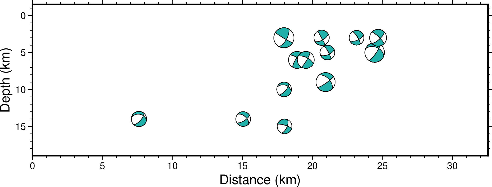

coupe
- 官方文档:
- 简介:
绘制震源机制解的剖面图
meca 在绘制震源球时，本质上是取了一个水平剖面，并将三维震源球的下半球投影到该水平剖面上。 而 coupe 则更灵活一些，可以将三维震源球投影到任意一个剖面上（例如垂直平面）。
对于一个水平剖面，会将下半球投影到平面上（即 meca 的做法）
对于一个垂直剖面，会将垂直平面 后方 的半球投影到平面上
对于任意一个非水平的平面而言：
u方向为平面的最速下降方向
s方向为平面的走向方向
输入数据中定义在 r, t, f 座标系中的矩张量会被重新定义到新的 -u^s, -u, s 座标系中。 在实际绘图中，通常使用 -JX15c/-5c 这样的投影参数定义一个Y轴正方向向下的笛卡尔座标系进行绘图。 三维震源球投影在这个笛卡尔座标系中的X座标为s方向上相对于剖面起点的距离，单位km。 而Y座标为u方向上相对于剖面起点的距离，单位km。对于一个垂直剖面，Y座标即为深度。
语法
gmt coupe [ table ] -Jparameters -Rregion -Aa|b|c|dparams[+c[n|t]][+ddip][+r[a|e|dx]][+wwidth][+z[s]a|e|dz|min/max] -Sformat[scale][+aangle][+ffont][+jjustify][+l][+m][+odx[/dy]][+sreference] [ -B[p|s]parameters ] [ -Ccpt ] [ -D[+c][+g[fill]][+odx[/dy]][+ppen][+s[symbol]size] ] [ -Efill ] [ -Fmode[args] ] [ -Gfill ] [ -H[scale] ] [ -I[intens] ] [ -L[pen] ] [ -N ] [ -Q ] [ -T[plane][+ppen] ] [ -U[stamp] ] [ -V[level] ] [ -Wpen ] [ -X[a|c|f|r][xshift] ] [ -Y[a|c|f|r][yshift] ] [ -dinodata[+ccol] ] [ -eregexp ] [ -hheaders ] [ -iflags ] [ -pflags ] [ -qiflags ] [ -ttransp ] [ -:[i|o] ] [ --PAR=value ]
必须选项
- table
一个或多个ASCII或二进制表数据。若不提供表数据，则会从标准输入中读取。
- -Jprojection (more …)
设置地图投影方式
- -Rxmin/xmax/ymin/ymax[+r][+uunit] (more …)
指定数据范围。
- -Aa|b|c|dparams[+ddip][+r[a|e|dx]][+wwidth]
以多种方式指定剖面
-Aalon1/lat1/lon2/lat2
lon1/lat1 剖面起点的经纬度
lon2/lat2 剖面终点的经纬度
dip 剖面所在平面的倾角。0表示水平剖面，90表示垂直剖面。默认为90度垂直剖面。
width 剖面两侧每一侧的宽度范围，单位为km（即剖面不是一个平面，而是一个有厚度的长方体）。宽度范围以外的数据点会被剔除。注意单位固定为km不可更改。默认为无限宽度，即囊括剖面两侧所有的数据点。
+r 自动计算作图范围，不需要再设置 -R 。在后面附加 a 会对作图范围自动进行四舍五入。附加 e 则表示进行精确计算（默认）。也可以附加一个数值 dx ，表示四舍五入到 dx 的整数倍。
-Ablon1/lat1/strike/length
lon1/lat1 剖面起点的经纬度
strike 是剖面的走向的方位角
length 是剖面的长度，单位固定为km不可更改。
其他参数与 -Aa 相同
-Acx1/y1/x2/y2
与 -Aa 选项相同，只是 x/y 为笛卡尔坐标而不是地理坐标
- -Adx1/y1/strike/length
与 -Ab 选项相同，只是 x/y 为笛卡尔坐标而不是地理坐标
- -S<format><scale>[+ffont][+jjustify][+odx[/dy]]
指定输入数据的格式、震源球大小等属性。
format 用于指定输入的震源机制解的格式。
scale 指定了5级地震（地震矩为4.0E23 dynes-cm）的震源球的直径。 默认情况下，震源球的直径与震级大小成正比，即实际直径为 size = M / 5 * scale。 若使用 -M 选项，则所有震源球大小相同。
每个震源球都可以有一个可选的标签。标签默认位于震源球的上方。
+ffont 设置震源球标签的文本属性
+jjustify 标签相对于震源球的位置 [默认为 BC，即正上方]
+odx[/dy] 标签的额外偏移量
- -Sascale[+ffont][+jjustify][+odx[/dy]]
Aki and Richards约定的震源机制解格式。输入文件的具体格式为:
X Y depth strike dip rake mag [newX newY] [title]
X 和 Y 为震源经度和纬度
depth 为震源深度，单位为km
strike、dip、rake 为断层的三个基本参数，单位为度
mag 为地震震级
newX 和 newY 震源球在图上的经纬度[可选]。默认震源球会放在 X 和 Y 处，指定新的震源球放置位置 newX 和 newY 以使得震源球与震源位置错开。
title 震源球标签[可选]
- -Scscale[+ffont][+jjustify][+odx[/dy]]
Global CMT约定的震源机制解格式。输入文件的具体格式为:
X Y depth strike1 dip1 rake1 strike2 dip2 rake2 mantissa exponent [newX newY] [title]
X 和 Y 为震源经度和纬度
depth 为震源深度，单位为km
两组 strike、dip、rake 为两个断层面的基本参数
mantissa 和 exponent 是地震标量矩的尾数和指数部分。 例如，地震标量矩为9.56e+26 dyne-cm，则 mantissa=9.56，exponent=26
newX 和 newY 震源球在图上的经纬度[可选]。默认震源球会放在 X 和 Y 处，指定新的震源球放置位置 newX 和 newY 以使得震源球与震源位置错开。
title 震源球标签[可选]
- -Sm|d|zscale[+ffont][+jjustify][+odx[/dy]]
地震矩张量。输入数据格式为:
X Y depth mrr mtt mff mrt mrf mtf exp [newX newY] [title]
X 和 Y 为震源经度和纬度
depth 为震源深度，单位为km
mrr 等是地震矩的6个分量，单位是 \(10^{exp}\) dyne-cm
exp 地震矩的指数部分。例如 mrr=2.5，exp=26 ，则真实 mrr = 2.0e26
newX 和 newY 震源球在图上的经纬度[可选]。默认震源球会放在 X 和 Y 处，指定新的震源球放置位置 newX 和 newY 以使得震源球与震源位置错开。
title 震源球标签[可选]
地震矩张量可以分解成各向同性部分（ISO）、双力偶部分（DC）和补偿线性向量 偶极部分（CLVD）。
m 表示绘制完整的地震矩张量（ISO+DC+CLVD）
d 表示仅绘制地震矩的双力偶部分（DC）
z 表示仅绘制地震矩的各向异性部分（DC+CLVD）
说明：
6个分量使用的坐标系为USE坐标系，与Global CMT的坐标系一致
Global CMT的矩张量解不包含各向同性部分，因而 -Sm 和 -Sz 的效果相同。
- -Spscale[+ffont][+jjustify][+odx[/dy]]
由两个断层平面的部分数据构成的机制解。输入数据格式为:
X Y depth strike1 dip1 strike2 fault mag [newX newY] [title]
X 和 Y 为震源经度和纬度
depth 为震源深度，单位为km
strike1 和 dip1 平面1的断层参数，strike2 是平面2的断层参数
fault 取-1或+1，表示正断层和逆断层
mag 地震震级
newX 和 newY 震源球在图上的经纬度[可选]。默认震源球会放在 X 和 Y 处，指定新的震源球放置位置 newX 和 newY 以使得震源球与震源位置错开。
title 震源球标签[可选]
- -Sx|y|tscale[+ffont][+jjustify][+odx[/dy]]
指定T、N、P轴的方位和大小。输入数据格式为:
X Y depth Tvalue Tazim Tplunge Nvalue Nazim Nplunge Pvalue Pazim Pplunge exp [newX newY] [title]
X 和 Y 为震源经度和纬度
depth 为震源深度，单位为km
Tvalue 等9个量定义了T、N、P轴的大小和方向
exp 是 Tvalue 等的指数部分
newX 和 newY 震源球在图上的经纬度[可选]。默认震源球会放在 X 和 Y 处，指定新的震源球放置位置 newX 和 newY 以使得震源球与震源位置错开。
title 震源球标签[可选]
地震矩张量可以分解成各向同性部分（ISO）、双力偶部分（DC）和补偿线性向量 偶极部分（CLVD）。
x 绘制完整的地震矩张量 (ISO+DC+CLVD)
y 只绘制地震矩的双力偶部分 (DC)
t 只绘制地震矩的各向异性部分 (DC+CVLD)
可选选项
- -Bparameters (more …)
设置底图边框和轴属性。
- -Ccpt
设置 CPT 根据数据文件中第三列的值（即地震深度）确定震源球的压缩部分的颜色。
- -Efill
扩张部分的填充色 [默认为白色]
- -Fmode[args]
设置多个属性，可重复使用多次
- -Fssymbol[size]
不绘制震源球，仅绘制一个符号。
symbol 为符号类型，可以选择 c|d|i|s|t|x， 符号的具体含义见 plot 模块的 -S 选项。size 为符号大小，后面可以附加单位 c, i 或 p 。
输入数据的格式为:
longitude latitude depth [event_label]
若未指定 size，则需要从输入数据的第四列读入符号大小，其余列向后移动。 event_label 为字符串标签的文本。
- -Fa[size[/Psymbol[Tsymbol]]]
计算并在震源球上P轴和T轴处绘制符号。 size 是符号大小； Psymbol 和 Tsymbol 符号可以取 c|d|h|i|p|s|t|x， 具体含义见 plot -S 选项 [默认值为 6p/cc]
- -Fefill
设置T轴符号的填充色。默认为 -E 控制。
- -Fgfill
设置P轴符号的填充色。默认为 -G 控制。
- -Fp[pen]
绘制P轴符号的轮廓。如果不设置画笔属性 pen 则默认为 -W 控制。
- -Ft[pen]
绘制T轴符号的轮廓。如果不设置画笔属性 pen 则默认为 -W 控制。
- -Fr[fill]
在震源球标签后加一个方框 [默认填充色为白色]
- -Gfill
指定压缩部分的填充色 [默认为黑色]
- -L[pen]
绘制震源球外部轮廓。如果不设置画笔属性 pen 则默认为 -W 控制。
- -N
绘图区域外的震源球也要绘制，默认不绘制。
- -Q
默认会生成一些临时文件，其中包含了剖面和剖面上的震源机制的信息， 供调试时使用。使用该选项，则不会生成这些临时文件。
- -T[plane][+ppen]
绘制断层平面。
plane 可以取：
0 绘制两个断层面
1 绘制第一个断层面
2 绘制第二个断层面
可以添加 +ppen 设置画笔属性。如果不设置画笔属性则默认为 -W 控制。
对于双力偶机制解而言，-T 选项只绘制震源球的圆周和断层平面，不填充颜色； 对于非双力偶机制解而言，-T0 在震源球的基础上覆盖上透明的断层平面。
- -W[pen]
设置断层平面的画笔属性 [默认为 0.25p,black,solid]
示例
从文本文件 data.txt 中读取数据，只挑选垂直剖面两侧4km的数据点绘图，自动计算作图范围。示例数据下载：coupe/data.txt
#!/usr/bin/env bash
gmt begin coupe_ex1
gmt coupe data.txt -JX15c/-5c -Sa0.9c -Aa78.43/41.26/78.70/41.05+d90+w4+r -W0.4p -GLIGHTSEAGREEN -Q
gmt basemap -BWSen -Byaf+l"Depth (km)" -Bxaf+l"Distance (km)"
gmt end show
{kind=link}
